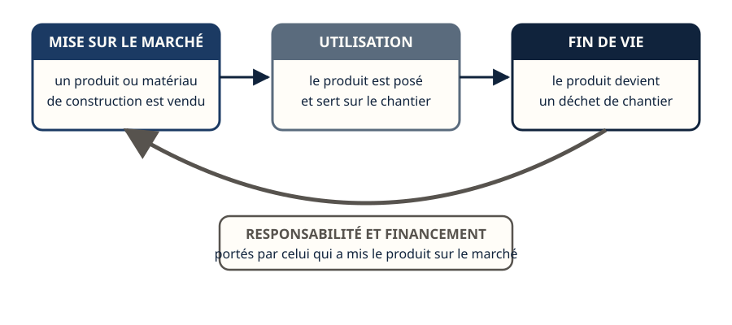
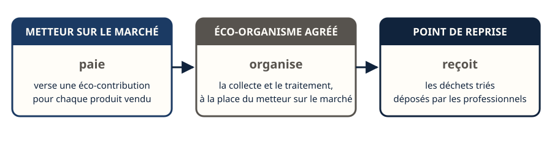
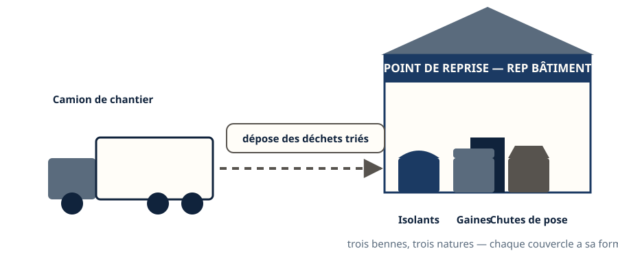
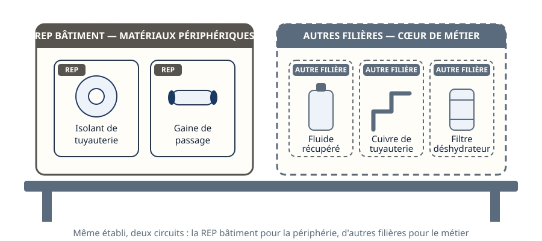
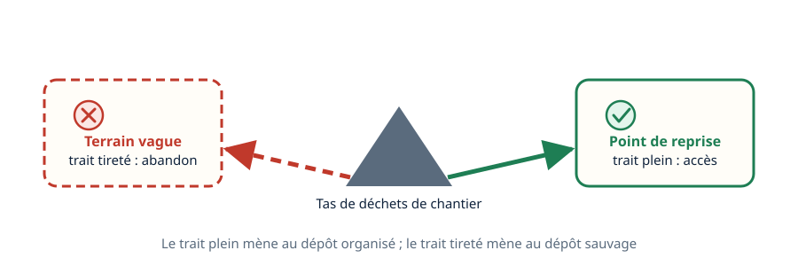
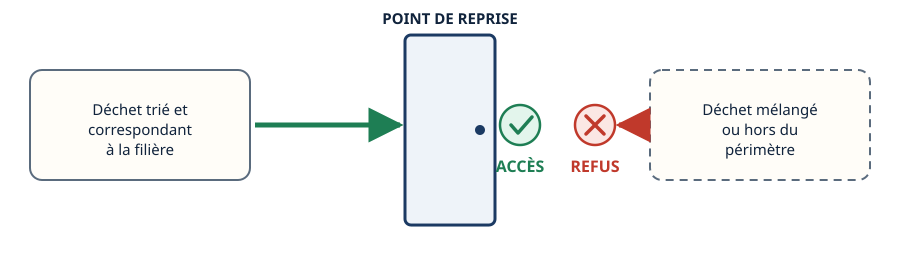
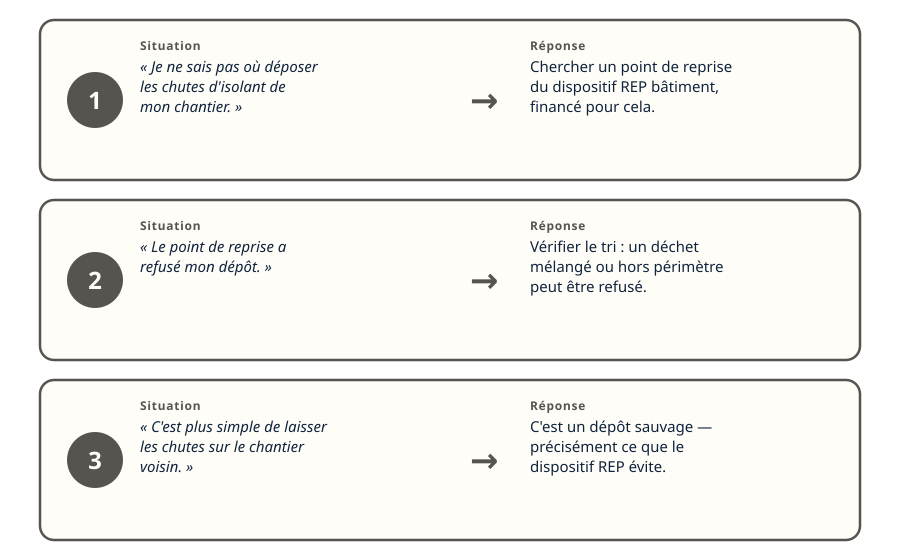
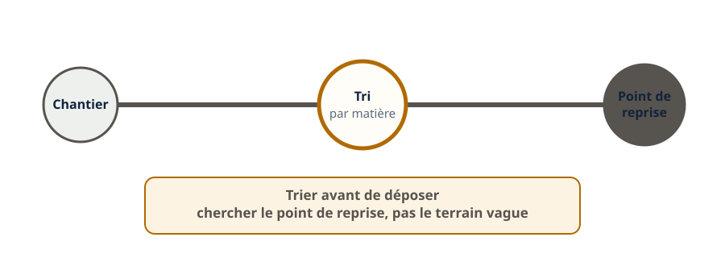

Déchets · niveau BTS
La REP bâtiment — reprise et éco-organismes
Mini-station commentée · 8 écrans et 4 questions · environ 10 minutes
À la fin de la station, vous comprenez le principe de responsabilité élargie du producteur (REP) appliqué aux matériaux du bâtiment, vous savez ce qu'est un éco-organisme, et vous savez utiliser un point de reprise pour les déchets d'un chantier de froid.
Chaque écran peut être expliqué à voix haute : le bouton « Écouter » commente ce que vous voyez. Rien n'est dit qui ne soit aussi écrit.
Écran 1 sur 8
Qui paie la fin de vie d'un produit
Le principe de la responsabilité élargie du producteur (REP) fait porter le coût et l'organisation de la fin de vie d'un produit sur celui qui l'a mis sur le marché — fabricant ou distributeur — et non sur celui qui le jette.
Ce principe existe déjà pour d'autres familles de produits ; il s'applique aussi aux matériaux et produits de construction du bâtiment.

Écran 2 sur 8
L'éco-organisme : qui organise concrètement
Le metteur sur le marché ne gère pas lui-même chaque déchet : il verse une éco-contribution à un éco-organisme agréé, qui organise à sa place la collecte et le traitement des déchets issus de ces produits.
L'éco-organisme est l'intermédiaire entre le financement et le terrain.

Écran 3 sur 8
Le point de reprise : où va le déchet de chantier
Un point de reprise est un lieu où un professionnel du bâtiment peut déposer les déchets triés issus de ses chantiers, financé par le dispositif REP.
Pour un frigoriste, cela concerne surtout les matériaux du bâtiment qu'il manipule à la marge de son cœur de métier : isolants, gaines, chutes de matériaux de pose.

Écran 4 sur 8
Ce que la REP change pour le frigoriste
La REP ne concerne pas le cœur de métier du frigoriste — le cuivre, les fluides, les filtres suivent leurs propres filières (voir les autres stations de cette sous-ligne).
Elle concerne les matériaux de construction et de second œuvre qu'il utilise en périphérie de son intervention : isolation de tuyauterie, gaines, supports.

Écran 5 sur 8
Pourquoi ce dispositif existe
Avant un dispositif organisé, les déchets de chantier sans filière évidente finissaient parfois en dépôt sauvage — abandonnés plutôt que traités.
Le maillage de points de reprise, financé par ceux qui mettent les produits sur le marché, vise à rendre le dépôt correct plus simple que l'abandon.

Écran 6 sur 8
Gratuit, sous conditions
L'accès à un point de reprise est en général gratuit pour un professionnel, mais sous conditions : le déchet doit être trié par nature, et correspondre aux matériaux couverts par la filière.
Un déchet mal trié ou hors périmètre peut être refusé.

Écran 7 sur 8
Le raisonnement : trois situations de terrain
- « Je ne sais pas où déposer les chutes d'isolant de mon chantier. » → Chercher un point de reprise du dispositif REP bâtiment, financé pour cela.
- « Le point de reprise a refusé mon dépôt. » → Vérifier le tri : un déchet mélangé ou hors périmètre peut être refusé.
- « C'est plus simple de laisser les chutes sur le chantier voisin. » → C'est un dépôt sauvage, précisément ce que le dispositif REP cherche à éviter.

Écran 8 sur 8
Bilan et le réflexe
- La REP fait porter la fin de vie d'un produit sur celui qui l'a mis sur le marché.
- L'éco-organisme organise concrètement la collecte, financée par une éco-contribution.
- Le point de reprise est l'endroit où déposer les déchets triés d'un chantier.
- Pour un frigoriste, la REP bâtiment concerne surtout les matériaux périphériques : isolants, gaines — pas le cœur de son métier.
- L'accès est en général gratuit, mais sous condition de tri correct.
Le réflexe : trier avant de déposer, et chercher le point de reprise plutôt que le terrain vague.

Question 1 sur 4
Que signifie le principe de responsabilité élargie du producteur (REP) ?
Question 2 sur 4
Quel est le rôle d'un éco-organisme ?
Question 3 sur 4
Pour un frigoriste, quels déchets relèvent le plus souvent de la REP bâtiment ?
Question 4 sur 4
Un point de reprise refuse un dépôt de chantier. Pourquoi, le plus souvent ?
Les correspondances de la station
- Traçabilité (sous-ligne Fluidique & thermique) — en préparation.
- Impact environnemental — en préparation.
Ces deux stations sont en préparation sur le plan du réseau.